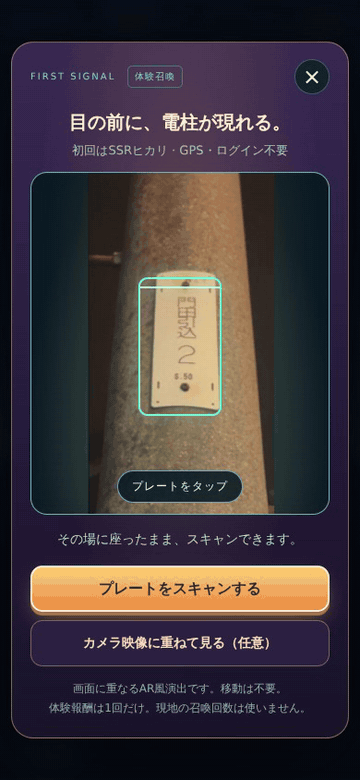
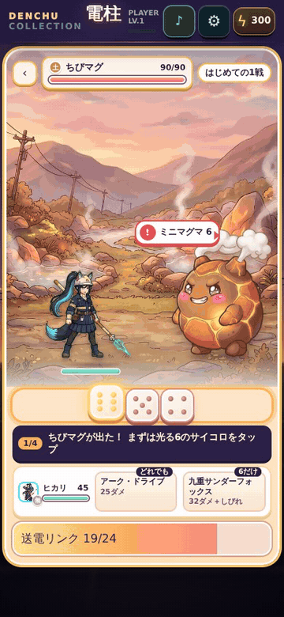

Denchu Collection
プレスキット
記事・動画・配信での紹介に、ここにある画像・GIF を自由にお使いください（トリミング・縮小も可）。掲載いただいた際は、ご一報いただけると助かります。
紹介文
ひとことで
電柱の番号札を撮ると、その電柱に住む少女「電姫」が現れる。同じ電柱には、いつも同じあの子。iPhone 向けの収集×サイコロバトル『電柱コレクション』。
くわしく
『電柱コレクション』は、電柱についている小さな番号札を撮ると、その電柱に住む少女「電姫（でんき）」が現れる、iPhone 向けのゲームです。同じ電柱からは、だれが撮っても同じ子が現れます。住人は47都道府県ごとにちがい、旅先の電柱には、まだ会ったことのない子が住んでいるかもしれません。
最初の召喚は、カメラも位置情報もいらない室内の「体験召喚」。出会った子とは、話したり、同じ電柱で再会したりするほど仲よくなり、最大3人のパーティで、地熱・火力・水力・風力の発電所を治める「四天王」にサイコロバトルで挑みます。訪日旅行者むけの英語版もあります。
特徴
- 電柱の番号札で、召喚札をカメラで撮るだけ。都道府県と札の番号で住人が決まり、同じ電柱を撮った友だちとは同じ子に会える。また行くと「再会」。
- はじめは座ったままカメラも位置情報もいらない「体験召喚」で、最初の相棒「雷狐 ヒカリ」（SSR）と出会う。ログイン・アカウント登録なし。
- 47都道府県に、47人電姫図鑑と、8地方の「地方アルバム」に集まる。47人それぞれに声があり、話すほどセリフも強さも変わる。
- 3人で挑む、サイコロバトル出た目に合わせて技を選ぶ。決まった目でしか出せない必殺技も。地熱・火力・水力・風力の「四天王」が待つ。
- 出会いを、カードに召喚した子のカードを画像にして、保存・シェアできる。
製品情報
| タイトル | 電柱コレクション（英題：Denchu Collection） |
|---|---|
| ジャンル | 電柱の番号札で召喚する、収集×サイコロバトル |
| 対応機種 | iPhone（iOS 15.0 以降） |
| 価格 | 無料 |
| 配信日 | 2026年10月23日 |
| 配信地域 | 日本、アメリカ、カナダ、イギリス、オーストラリア、ニュージーランド、シンガポール、香港、台湾、タイ、フィリピン、マレーシア、インド |
| 対応言語 | 日本語、英語 |
| 開発・運営 | サン楽（個人開発） |
| 公式サイト | https://denchu-collection.com/ |
| 公式 X | https://x.com/denchu_collect |
| App Store | https://apps.apple.com/jp/app/id6817256008 |
キービジュアル


アイコン
GIF
実際のゲーム（配信する版）の画面です。MP4（390 × 844・30fps）は GIF の下のリンクから。

GIF 1.8 MBMP4 0.4 MB


GIF 3.0 MBMP4 0.8 MB

スクリーンショット
1320 × 2868 の JPG。タップで原寸。
日本語版


英語版


配信・動画のガイドライン（実況・収益化 OK、事前の連絡は不要）
お問い合わせ
サン楽 メール：wakahisamk@gmail.com